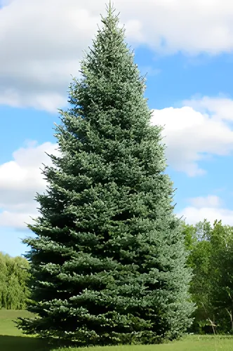
All Spruced Up Blue Spruce
Spruce, Blue
Uniform branching makes pruning unnecessary. Intense blue needles, for a little color wherever it's planted.
Unofficial demo built by MHS Tecnologia for Schulte's Greenhouse & Nursery. Not affiliated with or endorsed by Schulte's Greenhouse & Nursery.
One of the largest and most diverse selections in the north-west metro area: unusual and hard to find perennials, trees, shrubs and evergreens, plus annuals, fruit and vegetable plants.
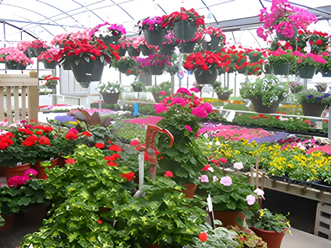
Over 12,000 square feet of greenhouses with annuals, vegetables, herbs and tropicals. Every plant is labeled with its sunlight needs, bloom time and more.
Annuals. Basic geraniums, impatiens and petunias, or something more unusual. Our staff will help you put together combinations for gardens, decks and patios.
Hanging baskets. You'll find them throughout the greenhouses and garden center. We grow and select most of the plants in them ourselves.
Tropicals. Outdoors for the Minnesota summer, indoors the rest of the year.
Vegetables and herbs. Peppers, tomatoes, cucumbers, squash and herbs, plus seeds, and help with planting and care.
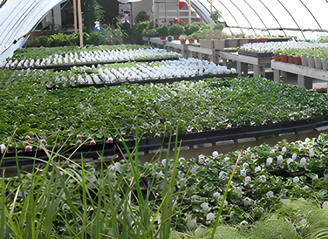
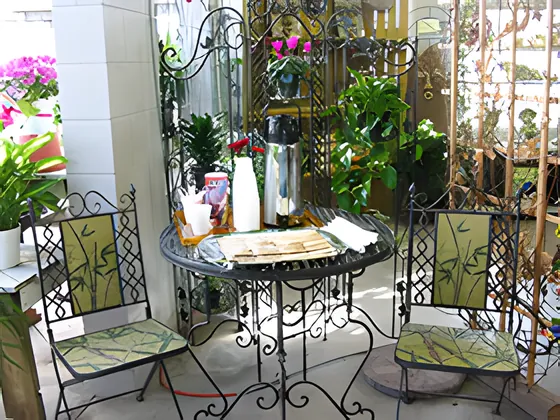
Perennials. One of the largest selections in the area, with new plants added every year. Ask us for one that attracts butterflies or one that thrives in a rock garden.
Shrubs. Most are grown on site, in a wide range of cultivars, colors and sizes, for hedges, screening or depth in a garden.
Trees. Shade trees, small ornamentals and fruit trees.
Evergreens. Spruce, cypress, junipers, pines, yews and cedars, in mounding, pyramidal, spreading and tree forms.
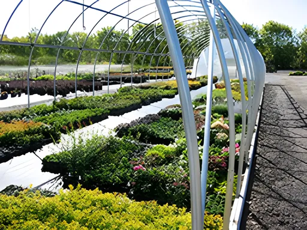
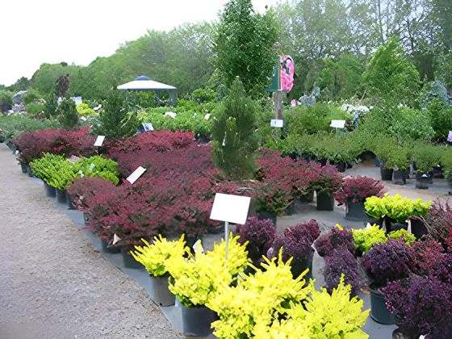
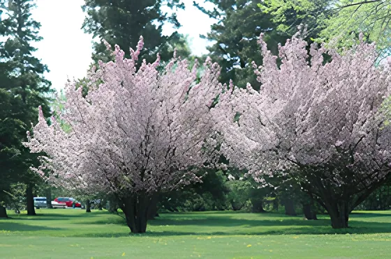
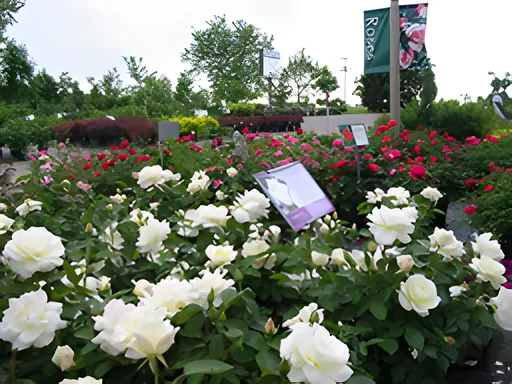
Two plants on our list started here.
From our Features page.
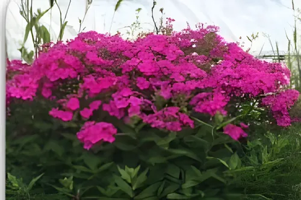
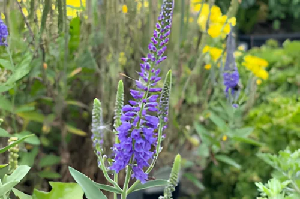
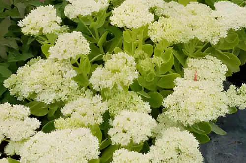
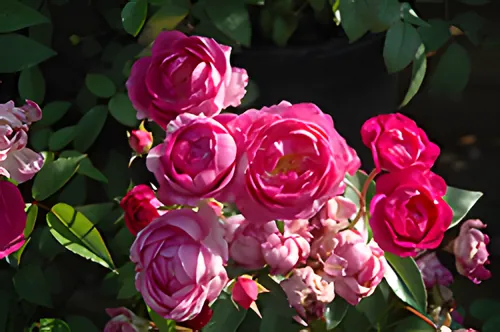
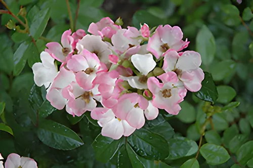
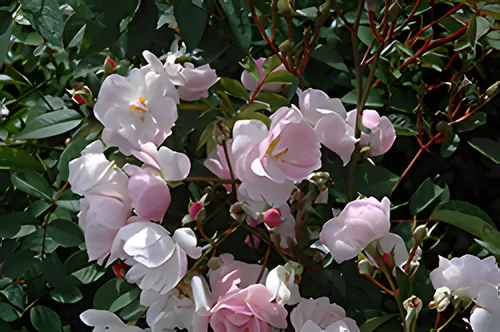
Fertilizers, pesticides and organic products, and staff to help you choose the right one. Handouts on topics from pruning to watering are in the store.
Soil amendments sold by the bag: peat moss, top soil, manure, mulches and potting soils. Sod on weekends in spring and early summer.
Gloves, shovels, small hand tools, ceramic pottery, wind chimes, miniature garden accessories, lawn and garden decor, grass seed, and flower and vegetable seeds.
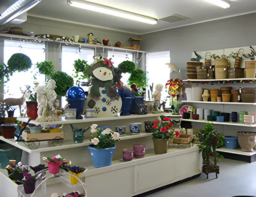